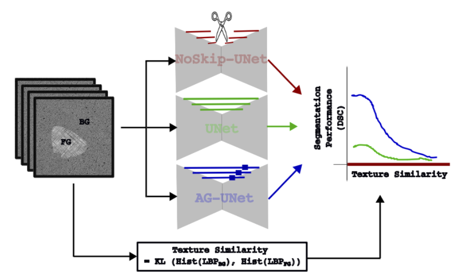

Abstract
Skip connections are considered essential in U-Net architectures for medical image segmentation, on the grounds that they preserve fine detail by bridging encoder and decoder layers. But are they always necessary? We introduce a measure of task complexity based on the texture disparity between foreground and background, and use it to ask when skip connections help and when they hurt.
Across controlled synthetic experiments and real datasets spanning breast ultrasound, colon histology, cardiac MRI and abdominal CT, a consistent picture emerges. Skip connections give little benefit at low and medium complexity, and become genuinely useful only when foreground and background are hard to tell apart. At the same time they carry a cost: architectures with denser skips degrade far more sharply under distribution shift than the same networks with the skips removed. Performance and robustness pull in opposite directions, and for safety-critical deployment the simpler architecture is often the better bet.
What we found
- Skips are conditional, not universal. Their benefit grows with task complexity. On easy tasks a no-skip network matches or beats the standard U-Net.
- Accuracy and robustness diverge. The architecture with the best in-distribution score is frequently the one that falls furthest under shift.
- Denser is more fragile. U-Net++ and attention-gated skips lead on clean data and collapse hardest on perturbed data. On heart MRI, U-Net++ goes from 0.925 Dice to 0.000.
- A mean hides the failure. The two synthetic sweeps below fail in opposite ways, losing the object and hallucinating it everywhere, and a single averaged score cannot tell them apart.
How task complexity is measured
We need a number that says how hard it is to tell foreground from background in a given image. We take local binary pattern histograms of each region and compute the KL divergence between them. A large divergence means the two textures are easy to separate and the task is easy; as the divergence shrinks the task gets harder in a way we can dial continuously with a blending parameter α.
The architectures
Six models in three groups, so that each network with skips has a near-identical partner without them. That pairing is what isolates the effect.
| Group | Models | Skip connections |
|---|---|---|
| No-skip | NoSkip U-Net, NoSkip V-Net | None; encoder and decoder communicate only through the bottleneck |
| Standard | U-Net, V-Net | Identity skips, by concatenation and by addition respectively |
| Enhanced | AGU-Net, U-Net++ | Attention-gated skips and dense nested skips |
Implemented with MONAI and PyTorch. Three seeds per configuration on the medical datasets.
Watching it break
Each clip runs all six architectures over the same test images while the texture disparity is dialled away from the training distribution. Read a panel left to right: the clean image, the ground truth, the image the model actually sees, and its prediction laid over the truth with a Dice score (1.000 is perfect, 0.000 means it found nothing). Cyan is the expert annotation, magenta is the model. Each row is one architecture, arranged so that every skip-connected model sits beside its no-skip twin.
The panels are dense. Use the fullscreen control on any clip to read the scores.
Results
Mean Dice on the held-out test sets, averaged over three seeds, as the perturbation moves from background blur (easier than training) through the unperturbed images to speckle noise (harder). Lines that stay flat are robust; lines that fall off a cliff are not.
Every point is also in the table below, and in dice-summary.csv.
Mean Dice, all runs
| Architecture | Easiest | Easier | Unperturbed | Harder | Hardest | Unpert. → hardest |
|---|---|---|---|---|---|---|
| Breast ultrasound (BUSI) | ||||||
| NoSkip U-Net | 0.744 | 0.749 | 0.761 | 0.735 | 0.620 | −0.141 |
| NoSkip V-Net | 0.743 | 0.762 | 0.760 | 0.752 | 0.730 | −0.030 |
| U-Net | 0.745 | 0.736 | 0.763 | 0.723 | 0.607 | −0.155 |
| V-Net | 0.713 | 0.717 | 0.724 | 0.712 | 0.690 | −0.034 |
| AGU-Net | 0.804 | 0.799 | 0.795 | 0.646 | 0.484 | −0.311 |
| U-Net++ | 0.746 | 0.714 | 0.733 | 0.432 | 0.165 | −0.567 |
| Colon histology (GLaS) | ||||||
| NoSkip U-Net | 0.690 | 0.746 | 0.800 | 0.720 | 0.713 | −0.087 |
| NoSkip V-Net | 0.670 | 0.728 | 0.818 | 0.762 | 0.734 | −0.083 |
| U-Net | 0.693 | 0.742 | 0.799 | 0.730 | 0.715 | −0.085 |
| V-Net | 0.713 | 0.742 | 0.786 | 0.757 | 0.741 | −0.045 |
| AGU-Net | 0.720 | 0.783 | 0.817 | 0.741 | 0.697 | −0.120 |
| U-Net++ | 0.718 | 0.771 | 0.820 | 0.720 | 0.703 | −0.117 |
| Left atrium (heart MRI) | ||||||
| NoSkip U-Net | 0.805 | 0.823 | 0.833 | 0.814 | 0.761 | −0.072 |
| NoSkip V-Net | 0.854 | 0.872 | 0.882 | 0.879 | 0.871 | −0.011 |
| U-Net | 0.740 | 0.805 | 0.901 | 0.492 | 0.076 | −0.824 |
| V-Net | 0.872 | 0.896 | 0.925 | 0.893 | 0.784 | −0.141 |
| AGU-Net | 0.827 | 0.890 | 0.929 | 0.142 | 0.033 | −0.896 |
| U-Net++ | 0.034 | 0.017 | 0.925 | 0.008 | 0.000 | −0.925 |
| Spleen (CT) | ||||||
| NoSkip U-Net | 0.105 | 0.271 | 0.606 | 0.562 | 0.434 | −0.172 |
| NoSkip V-Net | 0.141 | 0.223 | 0.732 | 0.415 | 0.315 | −0.417 |
| U-Net | 0.023 | 0.107 | 0.746 | 0.078 | 0.025 | −0.721 |
| V-Net | 0.000 | 0.082 | 0.925 | 0.057 | 0.001 | −0.924 |
| AGU-Net | 0.053 | 0.299 | 0.928 | 0.308 | 0.215 | −0.713 |
| U-Net++ | 0.010 | 0.072 | 0.908 | 0.000 | 0.000 | −0.908 |
The last column is the drop from the unperturbed test set to the hardest one. Read down it and the pattern is hard to miss: within every dataset, the no-skip models give up the least. On spleen CT every architecture suffers, but the no-skip pair retains roughly half its performance while the others go to near zero.
What to do with this
- Measure the task before choosing the architecture. If foreground and background are texturally distinct, the extra skip machinery is not buying much.
- Report degradation, not just the mean. A model that scores 0.93 clean and 0.00 perturbed is not a 0.93 model.
- Treat no-skip as a real baseline. For deployment across scanners and sites, the least elaborate architecture was repeatedly the most dependable one here.
Citation
@inproceedings{kamath2023we,
title = {Do we really need that skip-connection? Understanding its interplay with task complexity},
author = {Kamath, Amith and Willmann, Jonas and Andratschke, Nicolaus and Reyes, Mauricio},
booktitle = {International Conference on Medical Image Computing and Computer-Assisted Intervention},
pages = {302--311},
year = {2023},
organization = {Springer}
}
@article{kamath2025impact,
title = {The impact of U-Net architecture choices and skip connections on the robustness of segmentation across texture variations},
author = {Kamath, Amith and Willmann, Jonas and Andratschke, Nicolaus and Reyes, Mauricio},
journal = {Computers in Biology and Medicine},
volume = {184},
pages = {109364},
year = {2025},
publisher = {Elsevier}
}